Working with Business Rules¶
In streaming integration, there are common use cases for analyzing statistics that involve operations such as calculating the average, minimum, maximum etc., for different endpoints. The Business Rules Manager allows you to define templates and generate business rules from them for different scenarios with common requirements.
Creating Business Rules¶
This section explains how to create a business rule. A business rule can be created from a template or from scratch.
Creating Business Rules from a Template¶
Creating business rules from an existing template allows you to use sources, sinks and filters that have been already defined, and assign variable values to process events.
Before you begin:
- The business rule template must be already configured in the
<SI_TOOLING_HOME>/conf/server/deployment.yamlfile. For detailed instructions, see Business Rules Templates. - If you want to deploy the business rule after creating it, you need to start the SI server by navigating to the
<SI_HOME>/bindirectory and issuing one of the following commands:- On Windows:
server.bat --run - On Linux/Mac OS:
./server.sh
- On Windows:
To create a business rule from a template, follow the procedure below:
-
Navigate to the
<SI_TOOLING_HOME>directory from the terminal and start the Streaming Integrator Tooling by issuing one of the following commands:- On Windows:
tooling.bat --run - On Linux/Mac OS:
./tooling.sh
- On Windows:
-
Access the Business Rule Manager via one of the following URLs.
Protocol URL Format Example HTTP http://<SI_TOOLING_HOST>:<HTTP_PORT>/business-ruleshttp://0.0.0.0:9090/business-rulesHTTPS https://<SI_TOOLING_HOST>:<HTTPS_PORT>/business-ruleshttps://0.0.0.0:9443/business-rulesThis opens the following:
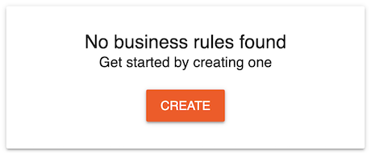
-
Click Create to open the following page.
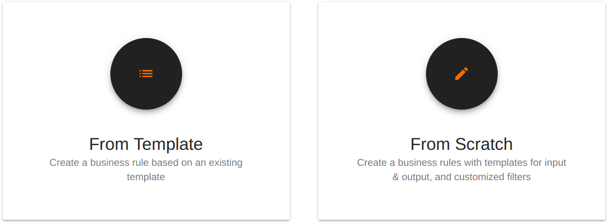
-
Then click From Template to open the Select a Template Group page, where the available templates are displayed.
-
Click on the template group that contains the required template to create a business rule from it. In this example, the business rule is created based on a template in the
Sweet Factorytemplate group that is packed with the Streaming Integrator by default. Therefore, click Sweet Factory to open this template group.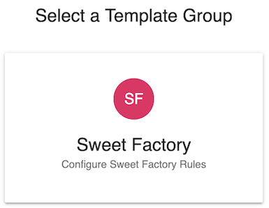
-
In the template group, expand the Rule Template list as shown below, and click on the required template. For this example, click Identify Continuous Production Decrease.
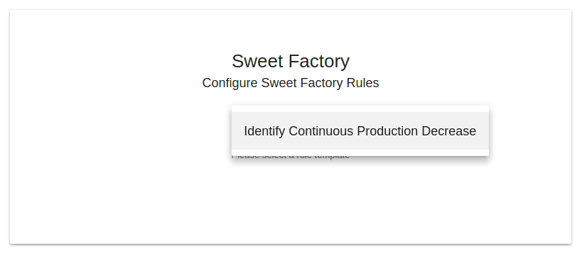
-
If you want to change the rule template from which you want to create the business rule, select the required value for the Rule Template field.
-
Enter a name for the business rule in the Business Rule Name field.
-
Enter values for the rest of the fields following the instructions in the UI.
Info
The fields displayed for the business rule differ based on the selected template.
-
If you want to save the business rule and deploy it later, click Save. If you want to deploy the business rule immediately, click Save and Deploy.
Creating a business rule from scratch¶
Creating a business rule from scratch allows you to define the filter logic for the rule at the time of creating, instead of using the filter logic that has been already defined in a template. However, you can select the required source and sink configurations from an existing template.
Before you begin:
If you want to deploy the business rule after creating it, you need to start the SI server by navigating to the <SI_HOME>/bin directory and issuing one of the following commands:
- On Windows: server.bat --run
- On Linux/Mac OS: ./server.sh
To create a business rule from scratch, follow the procedure below:
-
Navigate to the
<SI_TOOLING_HOME>directory from the terminal and start the Streaming Integrator Tooling by issuing one of the following commands:- On Windows:
tooling.bat --run - On Linux/Mac OS:
./tooling.sh
- On Windows:
-
Access the Business Rule Manager via one of the following URLs.
Protocol URL Format Example HTTP http://<SI_TOOLING_HOST>:<HTTP_PORT>/business-ruleshttp://0.0.0.0:9090/business-rulesHTTPS https://<SI_TOOLING_HOST>:<HTTPS_PORT>/business-ruleshttps://0.0.0.0:9443/business-rulesThis opens the following:
-
Click Create to open the following page, and then click From Scratch.
This opens the Select a Template Group page where the available template groups are displayed as shown in the example below.
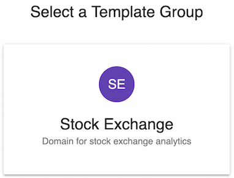
-
Click on the template group from which you want to select the required sources and sinks for your business rule. For this example, click Stock Exchange to open that template group as shown below.
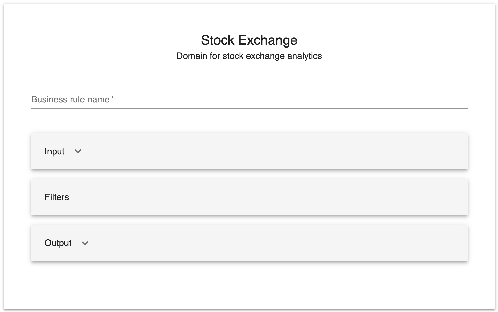
-
Click Input to expand the Input section. Then select the rule template from which the source and input configurations for the business rule must be selected.
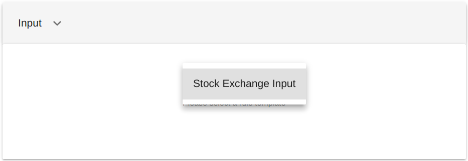
This displays the list of available sources and the exposed attributes of the selected template as shown below.
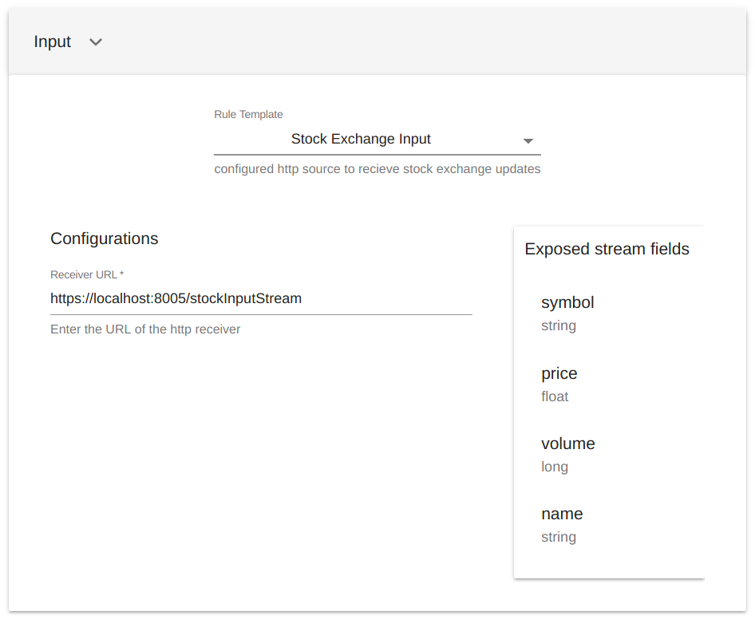
-
Click Filters to expand the Filters section, and click + to add a new filter. A table is displayed as shown below.
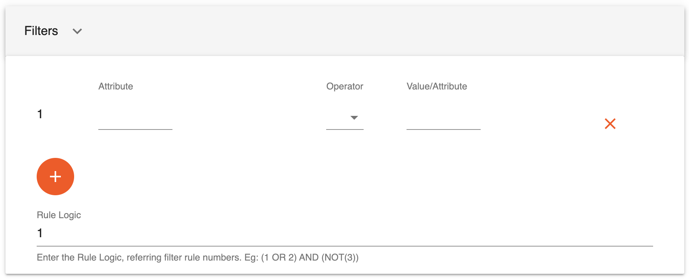
-
To define a filter, follow the steps below:
- In the Attribute field, select the attribute based on which you want to define the filter condition.
- In the Operator field, select an operator.
- In the Value/Attribute field, enter the value or another attribute based on which, the Operator is applied to the Attribute.
e.g.,
If you want to filter events where thepriceis less than 100 (which is a value), select values for the fields as follows:Field Value Attribute priceOperator <Value/Attribute (Value) 100If you want to filter events where the
priceis equal to thevolume(which is another attribute), select values for the fields as follows:Field Value Attribute priceOperator ==Value/Attribute (Attribute) volumeOnce you have defined two or more filters, enter the rule logic in the Rule Logic field using
OR,AND, andNOTconditions. The examples of how you can use these keywords are explained in the table below.Keyword Example OR1 OR 2returns events that match either filter 1 or 2.AND1 AND 2returns events that match both filters 1 and 2.NOTNOT 1returns events that do not match filter 1. -
Click Output to expand the Output section. Then select the rule template from which the sink and output configurations for the business rule must be selected.
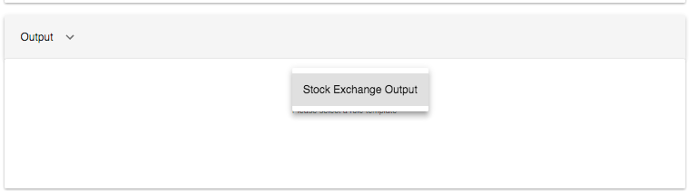
This displays the section for mapping configurations as shown in the example below.
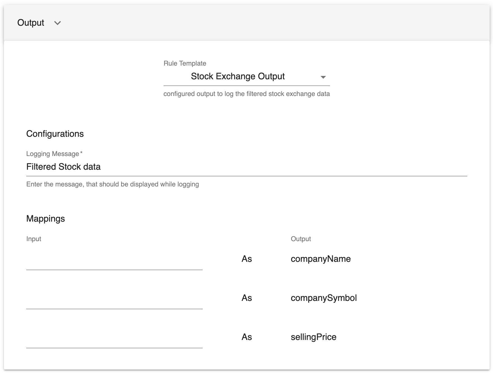
-
Select the relevant attribute names for the Input column. When publishing the events to which the rule is applied via the selected predefined sink, each input event you select is published with the corresponding name in the Output column.
Info
The output mappings displayed differ based on the output rule template you select.
-
If you want to save the rule and deploy it later, click Save. If you want to deploy the rule immediately, click Save and Deploy.
Managing Business Rules¶
Once you have created one or more business rules, you can manage them by viewing, editing, deploying, undeploying, and deleting them as required.
Viewing business rules¶
Once you start and access the Business Rules Manager, the available business rules are displayed as shown in the example below.
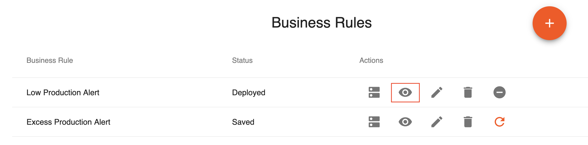
To view a business rule, click the icon for viewing (marked in the above image) for the relevant row. This opens the rule as shown in the example below.
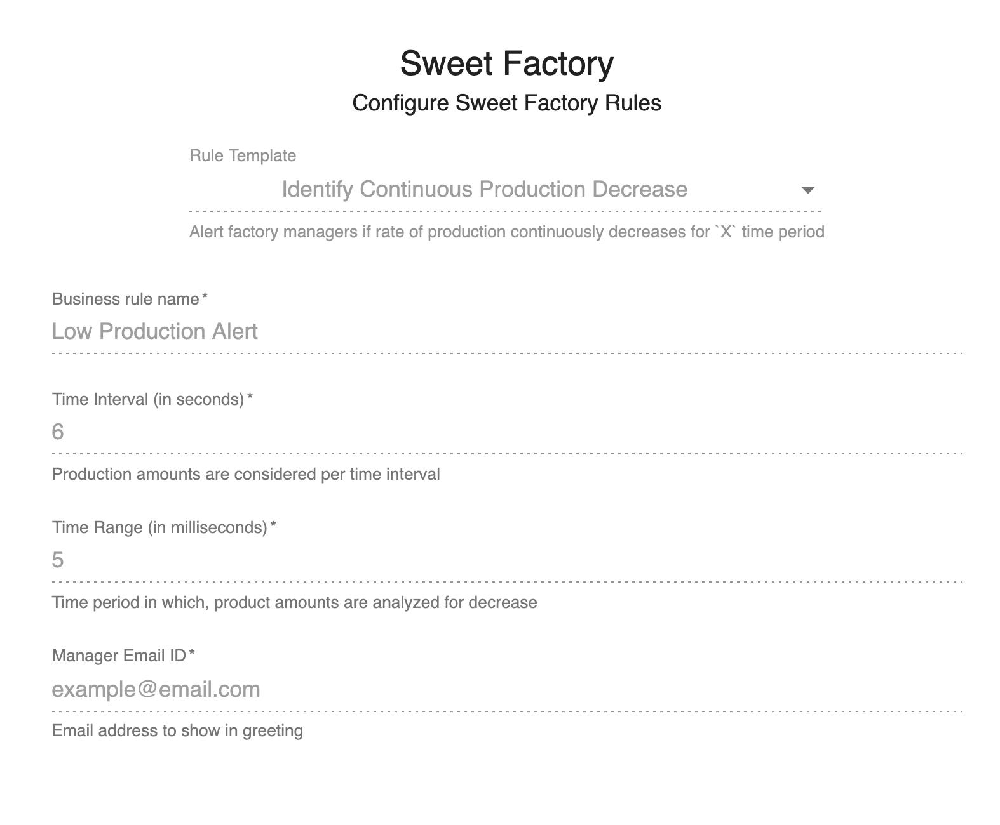
Editing business rules¶
Once you start and access the Business Rules Manager, the available business rules are displayed as shown in the example below.
To edit a business rule, click the icon for editing (marked in the above image) for the relevant row. This opens the rule as shown in the example below.
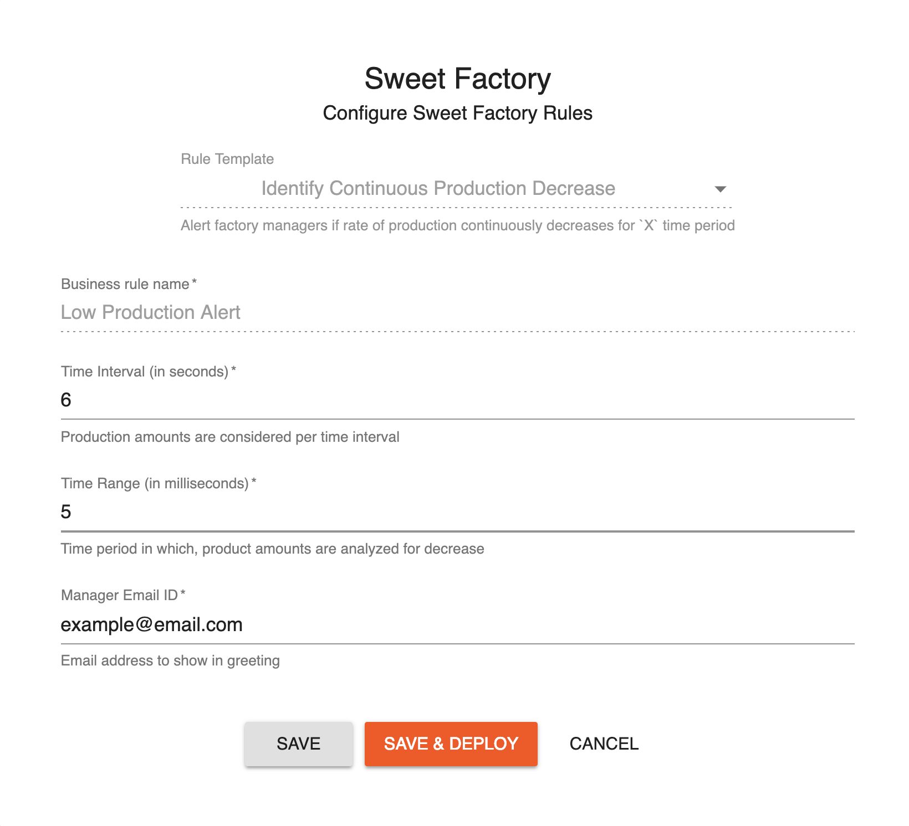
Modify values for the parameters displayed as required and click Save.
Deploying business rules¶
Before you begin:
Start the Streaming Integrator server by navigating to the <SI_HOME>/bin directory from the CLI, and issuing one of the following commands:
- On Windows: server.bat --run
- On Linux/Mac OS: ./server.sh
To deploy a business rule that you have previously saved, click the icon for deploying (marked in the image below) for the relevant row. As a result, a message appears to inform you that the rule is successfully deployed. 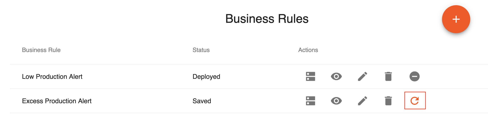
Undeploying business rules¶
To undeploy a business rule, click the icon for undeploying (marked in the image below) for the relevant row. As a result, a message appears to inform you that the rule is successfully undeployed.
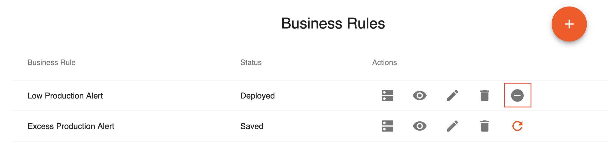
Viewing deployment information¶
If you want to view information relating to the deployment of a business rule, click the icon for viewing deployment information (marked in the image below) for the relevant row.
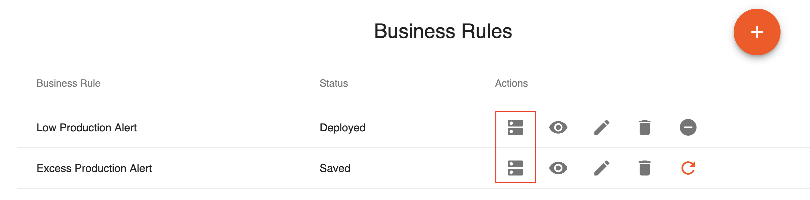
As a result, the deployment information including the host and port of the nodes in which the rule is deployed and the deployment status are displayed as shown in the image below. 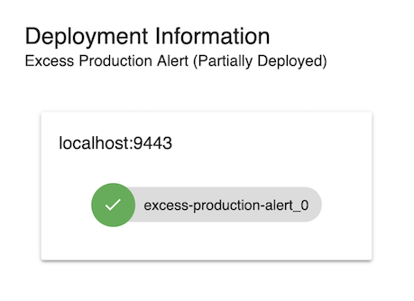
Possible deployment statuses are as follows:
-
Saved: The business rule is created, but not yet deployed in any Streaming Integrator node.
-
Deployed: The business rule is created and deployed in all the required nodes in the Streaming Integrator cluster.
-
Partially Deployed: The business rule is created and deployed only in some of the required nodes in the Streaming Integrator cluster.
-
Partially Undeployed: The business rule has been previously deployed, and then un-deployed only in some of the nodes in the Streaming Integrator cluster.
Info
Required nodes are configured with respect to a rule template. For detailed instructions, see Deploying business rules in SI server.
Deleting business rules¶
To delete a business rule, click the icon for deleting (marked in the image below) for the relevant row. A message appears to confirm whether you want to proceed with the deletion. Click Delete in the message. As a result, another message appears to inform you that the rule is successfully deleted.
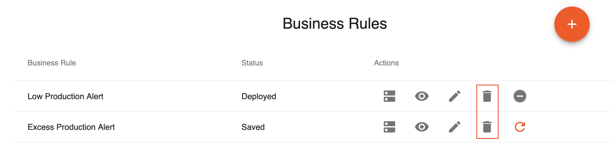
Creating a Business Rules Template¶
To create a business template using the Business Rules Template editor, follow the procedure below:
-
If you have not already started the Streaming Integrator tooling, navigate to the
<SI_TOOLING_HOME>/bindirectory from the terminal and start the Streaming Integrator Tooling as mentioned below.- On Windows:
tooling.bat --run - On Linux/Mac OS:
./ tooling.sh
- On Windows:
-
Access the Business Rules Template Editor via the URL that appears for it in the start up logs as shown in the example below.
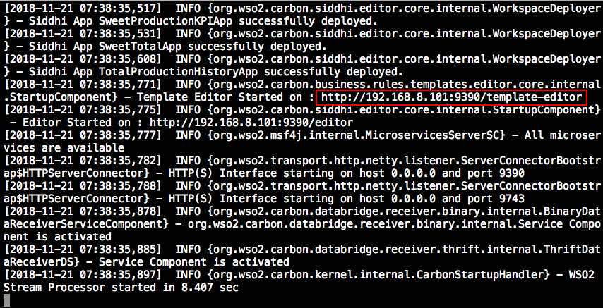
Info
The default URL is
http://localhost:9390/template-editor. -
The Template Editor opens as shown below. There are two views from which you can interact and create a template group. Design view allows you to visualize a template group and interact with it. Code view allows you to interact with a template group by typing content. (For more information about template group structure, see Business Rules Templates.)
Warning
Do not template sensitive information such as passwords in a Siddhi application or expose them directly in a Siddhi application. For detailed instructions to protect sensitive data by obfuscating them, see Protecting Sensitive Data via the Secure Vault.
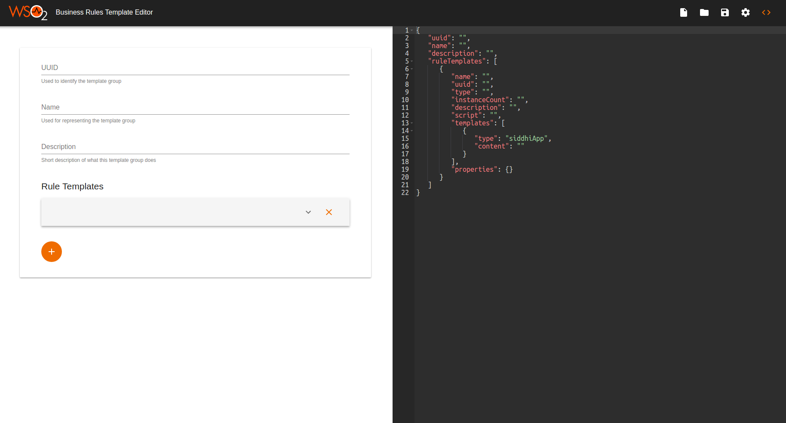
You can create a template group using the design view or the code view as explained in the following sections.
Create from Design View¶
To create a business rules template group from the design view, follow the procedure below:
-
Enter a UUID (Universally Unique Identifier), name and a description for the template group as follows.
Field Name UUID sweet-factory Name Sweet Factory Description Analyzes Sweet Factory scenarios 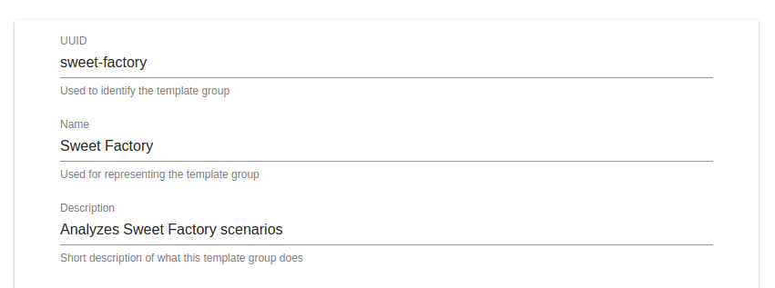
-
Expand the first rule template that exists by default, and enter the following details.
Field Name Value UUID identifying-continuous-production-decrease Name Identify Continuous Production Decrease Description Alert factory managers if the rate of production continuously decreases for a specified time period Type Template Instance Count One 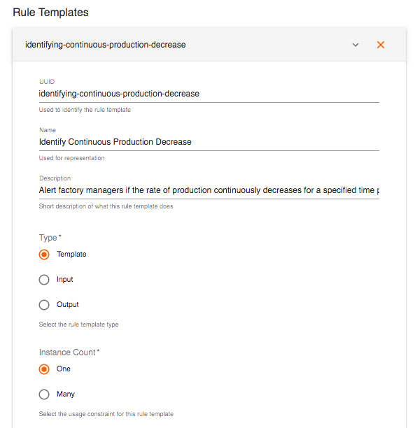
-
To include a Siddhi application template, expand the first template that is displayed by default, and enter the following Siddhi application template.
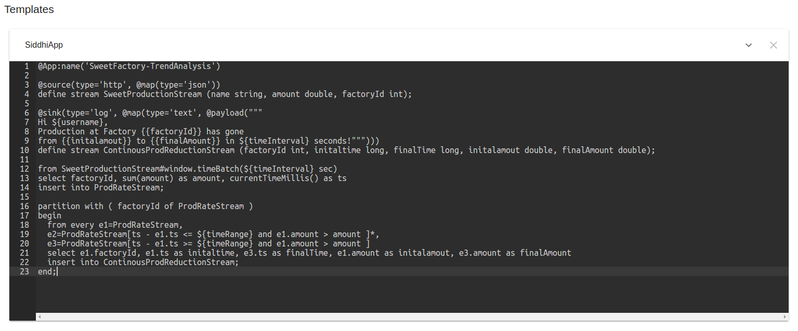
@App:name('SweetFactory-TrendAnalysis') @source(type='http', @map(type='json')) define stream SweetProductionStream (name string, amount double, factoryId int); @sink(type='log', @map(type='text', @payload(""" Hi ${username}, Production at Factory {{factoryId}} has gone from {{initalamout}} to {{finalAmount}} in ${timeInterval} seconds!"""))) define stream ContinousProdReductionStream (factoryId int, initaltime long, finalTime long, initalamout double, finalAmount double); from SweetProductionStream#window.timeBatch(${timeInterval} sec) select factoryId, sum(amount) as amount, currentTimeMillis() as ts insert into ProdRateStream; partition with ( factoryId of ProdRateStream ) begin from every e1=ProdRateStream, e2=ProdRateStream[ts - e1.ts <= ${timeRange} and e1.amount > amount ]*, e3=ProdRateStream[ts - e1.ts >= ${timeRange} and e1.amount > amount ] select e1.factoryId, e1.ts as initaltime, e3.ts as finalTime, e1.amount as initalamout, e3.amount as finalAmount insert into ContinousProdReductionStream; end; -
To add variable attributes to the script, click Add Variables.
Info
A script is a javascript that can be applied when the inputs provided by the business user who uses the template need to be processed before replacing the values for the template variables. e.g., If the average value is not provided, a function within the script can derive it by calculating it from the minimum value and the maximum value provided by the business user.
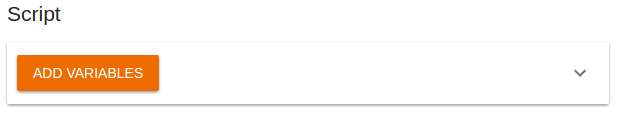
-
To specify the attributes that need to be considered as variables, select the relevant check boxes under Select templated elements. In this example, you can select the username and timeRange check boxes to to select the attributes with those names as the variables.
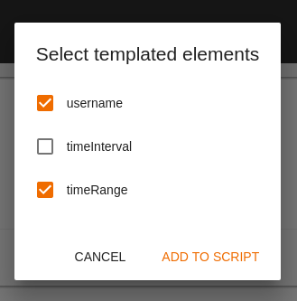
Then click Add To Script to update the script with the selected variables with auto-generated function bodies as shown below. 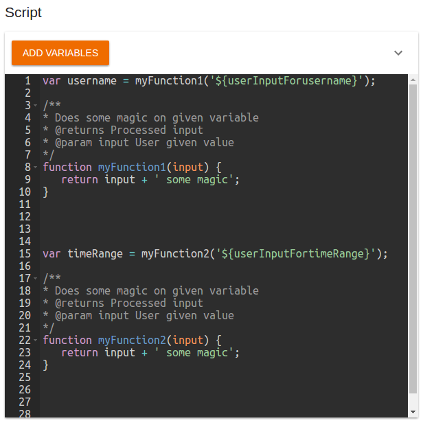
-
Edit the script to add the required functions. In this example, let's rename
myFunction1(input)togetUsername(email), andmyFunction2(input)tovalidateTimeRange(number).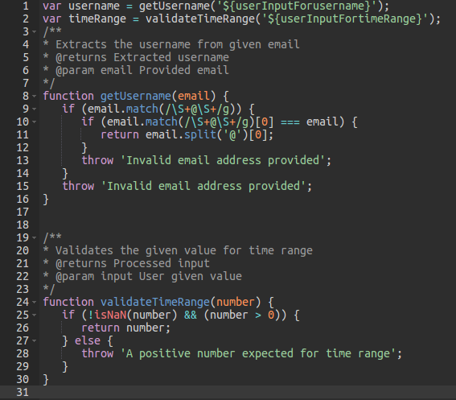
var username = getUsername('${userInputForusername}'); var timeRange = validateTimeRange('${userInputFortimeRange}'); /** * Extracts the username from given email * @returns Extracted username * @param email Provided email */ function getUsername(email) { if (email.match(/\S+@\S+/g)) { if (email.match(/\S+@\S+/g)[0] === email) { return email.split('@')[0]; } throw 'Invalid email address provided'; } throw 'Invalid email address provided'; } /** * Validates the given value for time range * @returns Processed input * @param input User given value */ function validateTimeRange(number) { if (!isNaN(number) && (number > 0)) { return number; } else { throw 'A positive number expected for time range'; } } -
To generate properties, click Generate against Properties.
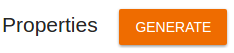
This expands the Properties section as follows.
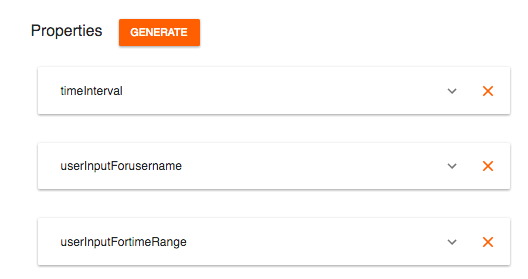
-
Enter values for the available properties as follows. For this example, let's enter values as shown in the following table.
Info
A property is defined for each templated attribute (defined in the
${templatedElement}format), so that it is self descriptive for the business user who uses the template. The values configured for each property are as follows:-
Field Name: The name with which the templated attribute is displayed to the business user.
-
Field Description: A description of the property for the business user to understand its purpose.
-
Default Value: The value assigned to the property by default. The business user can change this value if required.
-
Options: this is an optional configuration that allows you to define a set of values for a property so that the business user can select the required value from a list. This is useful when the possible value for the property is limited to a set of options.
Property Field Name Field Description Default Value timeIntervalTime interval (in seconds)Production amounts are considered per time interval6userInputForusernameManager Email IDEmail address to show in greetingexample@email.comuserInputFortimeRangeTime Range (in milliseconds)Time period in which, product amounts are analyzed for decrease5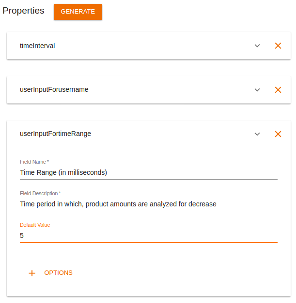
-
-
To save the template, click the save icon at the top of the page.
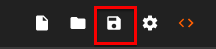
Create from code view¶
When you use the code view, the same parameters for which you enter values in the design view are represented as JSON keys. For each parameter, you can specify a value against the relevant JSON key as shown in the extract below.
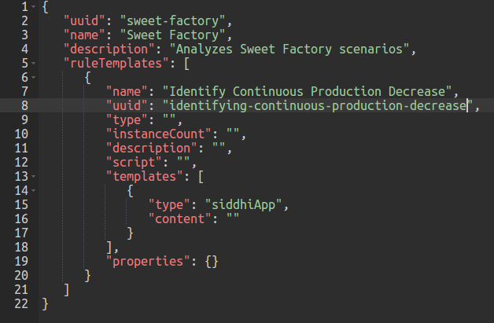
When you update the code view with a valid template group definition, the design view is updated simultaneously as shown below.
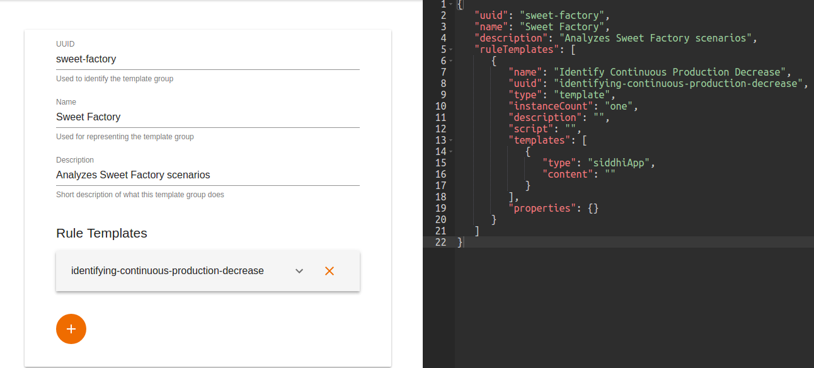
However, if the content you enter in the code view is an invalid template group, the design view is not updated, and an error is displayed as follows.
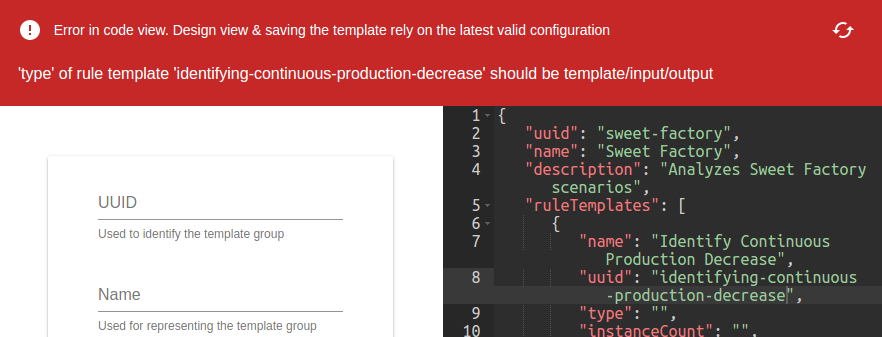
When an error is detected in the entered template group structure, the Recover button is displayed with the error message.
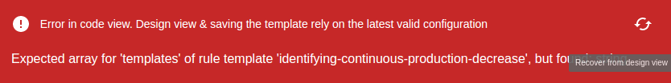
When you click Recover, the code view is reset to the latest detected valid template group definition. At any given time, the design view displays information based on the latest detected valid template group definition.
Info
It is not recommended to add Siddhi application templates and scripts using the code view because they need to be provided as a single line, and the possible escape characters should be handled carefully.
Editing a Business Rules Template¶
WSO2 SI allows you to make edits to a business rules template that you have already created and saved. To edit a template via the Template Editor tool, follow the steps below.
-
Start the WSO2 SI Tooling profile by issuing one of the following commands.
- For Windows:
tooling.bat - For Linux:
./tooling.sh
- For Windows:
-
Access the Template Editor via the URL that appears for it in the start up logs as shown in the example below.
Info
The default URL is
http://localhost:9390/template-editor. -
The Template Editor opens as follows.
To open an existing template, click the Open icon in the top panel (marked in the image above). In the Open Template File dialog box, click Choose File and browse for the required template. Once you have selected the template, click Load to open it in the Template Editor.
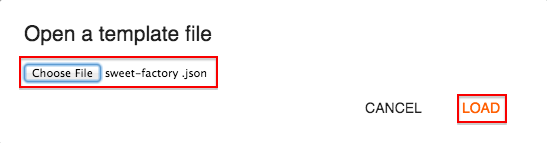
-
Edit the template as required. You can update it in the Design View or the Source View as you prefer. For more information, see Creating a Business Rule Template.
-
Save your edits by clicking the Save icon in the top panel.
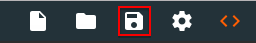
Business Rules Templates¶
Rule Templates are used as specifications to gain inputs from users, through dynamically generated fields for the purpose of creating business rules. A template group is a business domain level grouping. The definition of a template looks as follows.
{
"templateGroup" : {
"name" : "<Name of the template group>",
"uuid":"<UUID for the template group>",
"description" : "<(Optional) description for the template group>",
"ruleTemplates" : [
{
"name" : "<Name of the rule template>" ,
"uuid" : "<UUID for the rule template>",
"type" : "template",
"instanceCount" : "one <or> many",
"description" : "<(Optional) description for the rule template>",
"script" : "<(Optional) Javascript with reference to the properties>",
"templates" : [
{ "type" : "siddhiApp",
"content" : "<SiddhiApp_1 with ${templatedProperty_x}>"
},
{ "type" : "siddhiApp",
"content" : "<SiddhiApp_n with ${templatedProperty_y}>"
}
],
"properties" : {
"templatedProperty_x" : {"fieldName" : "<Field name for the property>", "description" : "<Description for the property>", "defaultValue" : "<Default value for the property>"},
"templatedProperty_y" : {"fieldName" : "<Field name for the property>", "description" : "<Description for the property>", "defaultValue" : "<Default value for the property>", "options" : ["<option_1>", "<option_n>"]}
}
},
{
"name" : "<Name of the rule template>",
"uuid" : "<UUID for the rule template>",
"type" : "input",
"instanceCount" : "one <or> many",
"description" : "<(Optional) description for the rule template>",
"script" : "<(Optional) Javascript with reference to the properties>",
"templates" : [
{ "type" : "siddhiApp",
"content" : "<SiddhiApp with ${templatedProperty_x}>",
"exposedStreamDefinition" :"<Exposed stream definition>"
}
],
"properties" : {
"templatedProperty_x" : {"fieldName" : "<Field name for the property>", "description" : "<Description for the property>", "defaultValue" : "<Default value for the property>", "options" : ["<option_1>", "<option_n>"]}
}
},
{
"name" : "<Name of the rule template>",
"uuid" : "<UUID for the rule template>",
"type" : "output",
"instanceCount" : "one <or> many",
"description" : "<(Optional) description for the rule template>",
"script" : "<(Optional) Javascript with reference to the properties>",
"templates" : [
{ "type" : "siddhiApp",
"content" : "<SiddhiApp with ${templatedProperty_x}>",
"exposedStreamDefinition" :"<Exposed stream definition>"
}
],
"properties" : {
"templatedProperty_x" : {"fieldName" : "<Field name for the property>", "description" : "<Description for the property>", "defaultValue" : "<Default value for the property>", "options" : ["<option_1>", "<option_n>"]}
}
}
]
}
}The following parameters are configured:
Template Group basic data¶
The following parameters are configured under templateGroup.
| Parameter | Description | Required/Optional |
|---|---|---|
name |
A name for the template group |
Required |
uuid |
A uniquely identifiable id for the template group | Required |
description |
A description for the template. | Optional |
Rule Template details¶
Multiple rule templates can be defined under a templateGroup. For each ruleTemplate, the following set of parameters need to be configured:
| Parameter | Description | Required/Optional |
|---|---|---|
name |
A name for the rule template | Required |
uuid |
A uniquely identifiable id for the rule template | Required |
type |
The type of the rule template. Possible values are as follows:
|
Required |
instanceCount |
This specifies whether the business rules derived from the template can be deployed only on one node, or whether they can be deployed on many nodes. Possible values are as follows:
|
Required |
script |
The Java script to be executed on the templated fields. Developers can use this script for:
You need to mention each templated element that needs to be derived from entered parameters as a variable in the global scope of the javascript. You also need to template the entered parameters in the script itself. These values are later replaced with their respective entered values. Consider the following script
The derived value stored in |
Optional |
description |
A brief description of the rule template. | Optional |
templates |
These are the artifacts (i.e SiddhiApps) with templated parameters that are instantiated with replaced values when a business rule is created. |
Required |
properties |
You can add a field name, description, default value and possible values (optional) |
Required |
Deploying business rules in SI server¶
To deploy a business rule in the Streaming Integrator server, follow the procedure below.
Before you begin:
Both the Streaming Integrator server(s) and Streaming Integrator tooling must be up and running.
-
Save the template group you created as a
.jsonfile in the<SI_TOOLING_HOME>/wso2/server/resources/businessRules/templatesdirectory. -
In the
BusinessRulessection of the<SI_TOOLING_HOME>/conf/server/deployment.yamlfile, add a configuration for the template you created as shown below.wso2.business.rules.manager: datasource: <datasourceName> - nodeURL1: - ruleTemplateUUID1 - ruleTemplateUUID2 nodeURL2: - ruleTemplateUUID1 - ruleTemplateUUID2Info
Specify the value for
nodeURL1in theIP:Portformat. If you add this configuration, a business rule which is derived from this rule template (when you run the Streaming Integrator Tooling and the Streaming Integrator servers of your SI setup) is deployed only in the nodes under which - this rule template has been specified. If you do not specifically add business rule template IDs in the configuration, business rules are deployed in all the available Streaming Integrator servers.
Configuring Business Rules Manager Permissions¶
There are two permission levels for a business rules application:
- Manager: User roles with this permission level have administrative privileges over business rules. They are allowed to create, view, edit, deploy or delete business rules.
- Viewer: User roles with this permission level are only allowed to view business rules.
This section covers how to configure Business Rules Manager permissions.
Before you begin:
Before configuring Business Rules Manager permissions, the user roles to be assigned permissions must be already defined in the user store with the required user IDs. For detailed instructions, see User Management.
You need to define the roles related to the Business Rules Manager under the wso2.business.rules.manager component namespace in the <SI_TOOLING_HOME>/conf/server/deployment.yaml file.
The following is a sample configuration of user roles for the Business Rules Manager.
wso2.business.rules.manager:
roles:
manager:
- name: role1
id: 1
viewer:
- name: role2
id: 2